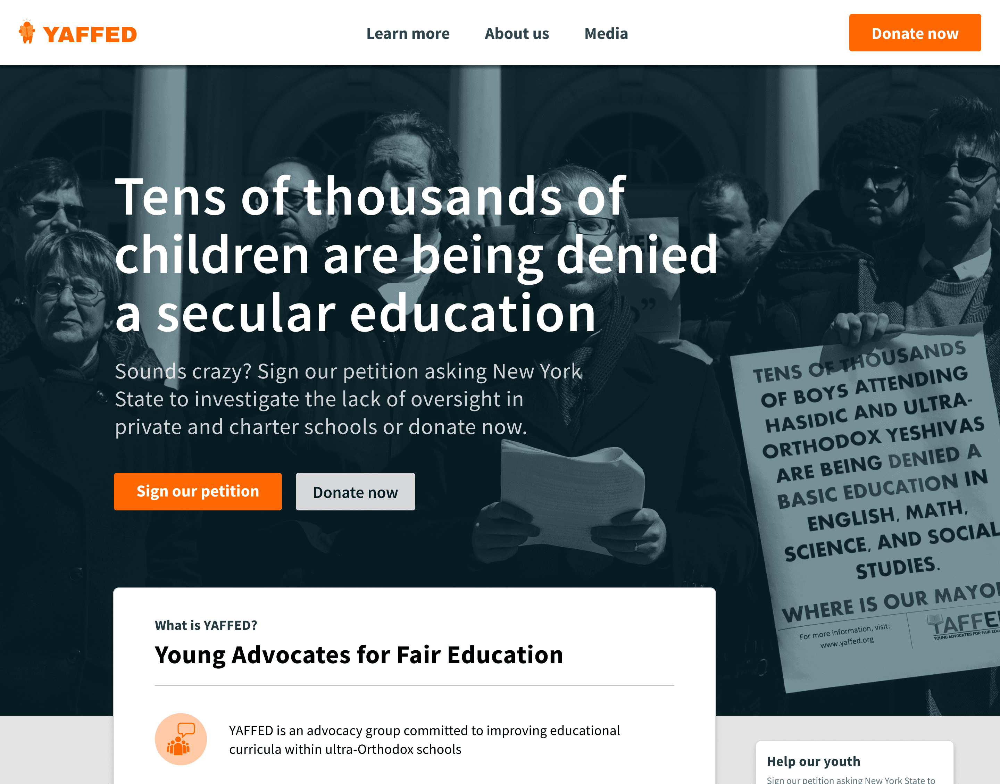
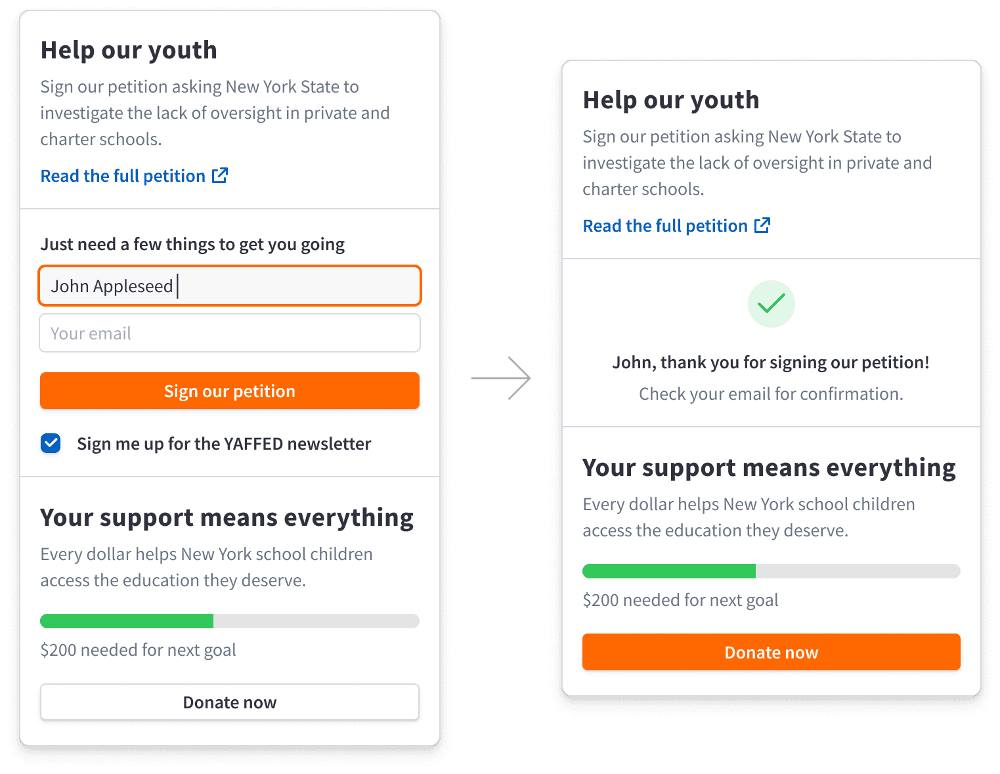
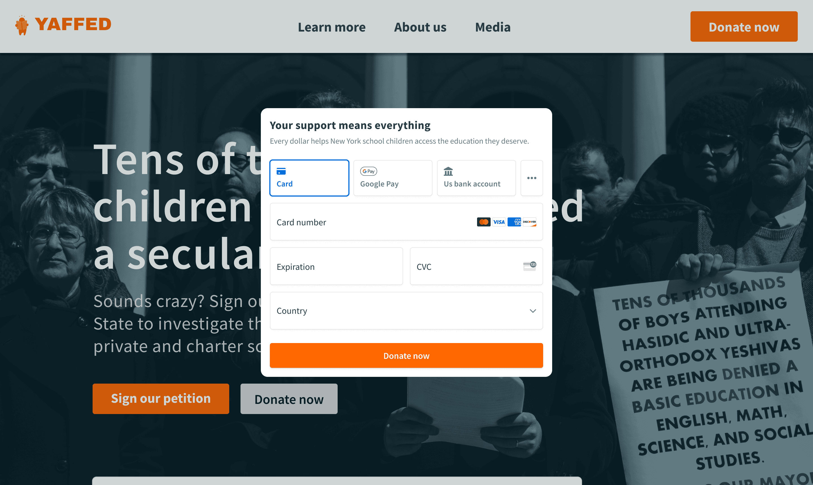
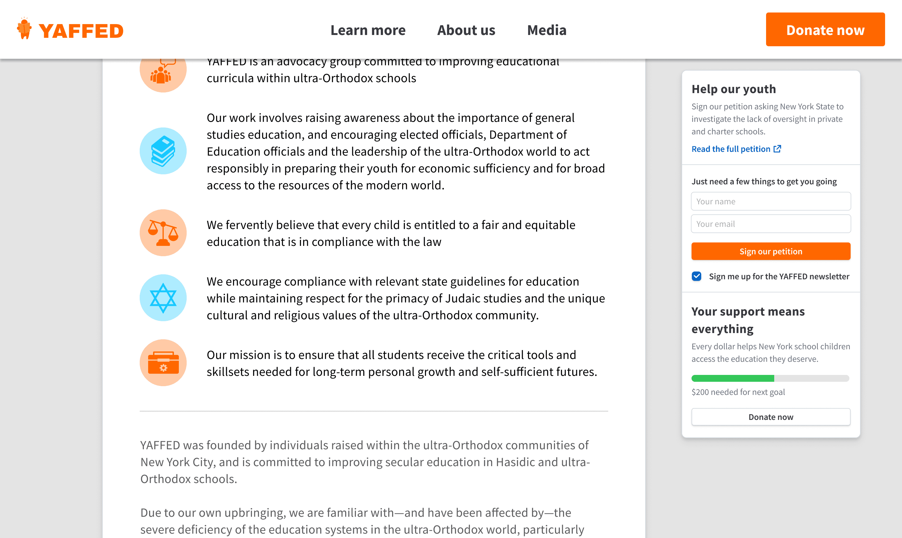
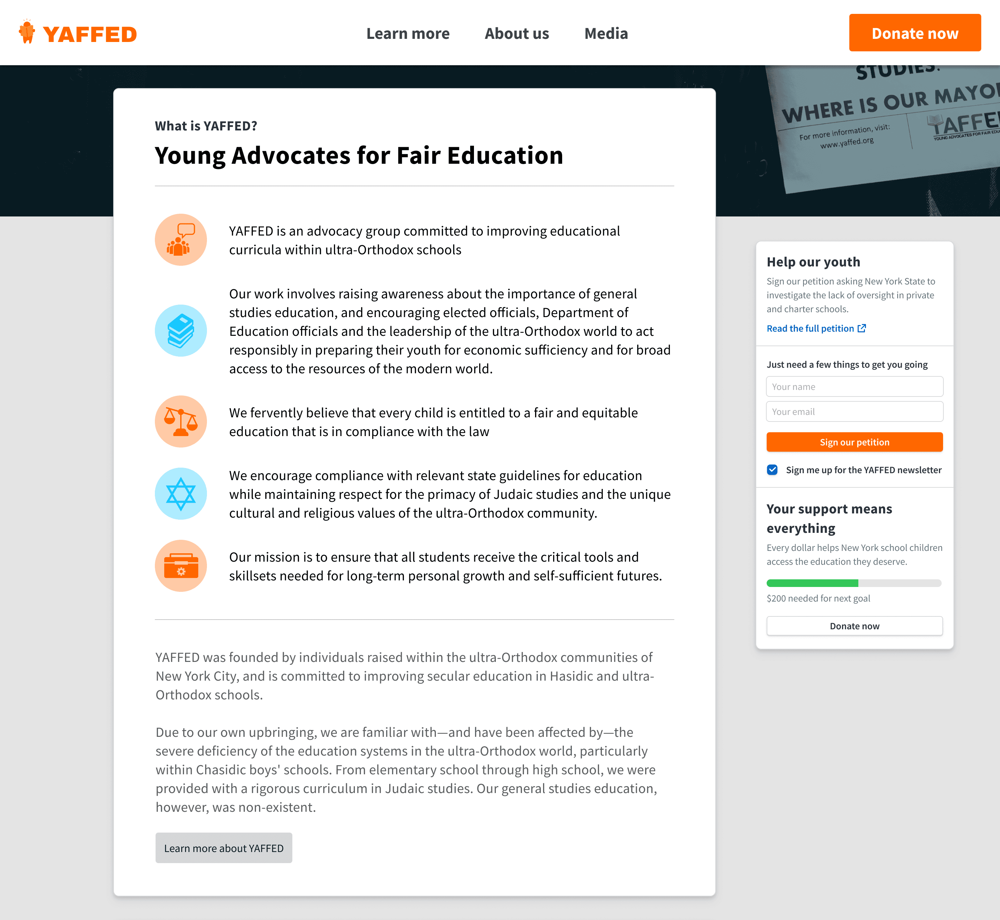
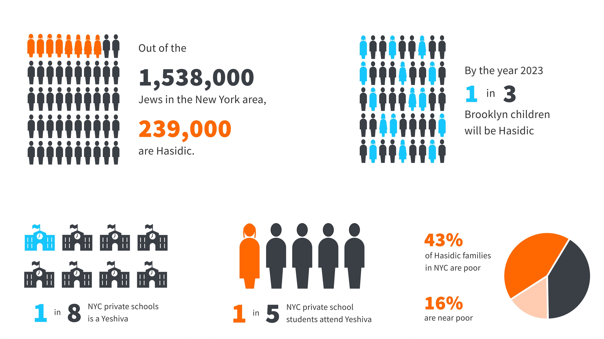
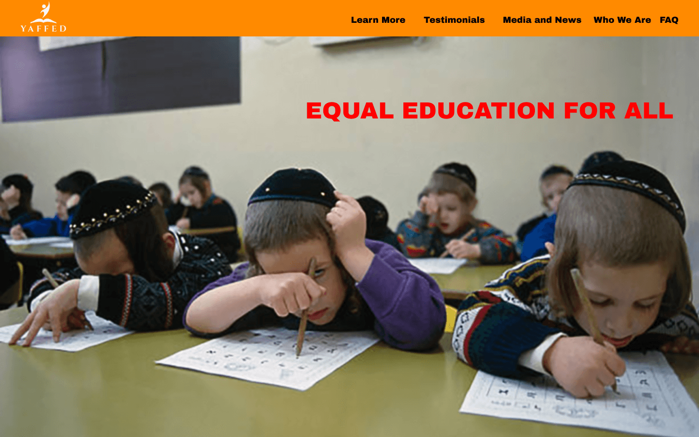

The Problem
YAFFED had spent over a decade pushing for New York State oversight of curricula at ultra-Orthodox private schools — a fight being waged largely through advocacy pressure: petitions, public donations, and sustained visibility. Their existing website wasn't built for any of that. It was aged, and it wasn't structured to convert the visitors an active advocacy campaign actually depends on.
My Role
YAFFED's leadership brought me on to redesign the site, but the scope grew to cover the brand system and campaign collateral as well — I ended up owning design and development end to end, including writing the HTML/CSS myself rather than handing it to a developer.
Approach
The core decision was sequencing, not layout. A visitor to an advocacy page can be asked for a signature, a donation, and an email address — but asking for all three at once dilutes each one. I unified them into a single flow that leads with the lowest-friction actions first (petition signature, newsletter signup), then shifts focus to donation once someone has already committed to the first two — including changing the CTA to a more dominant color at that point in the flow, so the visual priority matches the actual conversion priority.


Because the page carried a lot of context (who YAFFED is, what the campaign is about, why it matters) alongside the conversion asks, I added a sticky CTA sidebar so a visitor could act at any point without losing their place or scrolling back up.

Traffic to this page came in cold — from ads, social shares, and email links — so a meaningful share of visitors had no context on YAFFED at all. I designed a dedicated, plainly-written about section to establish that context quickly, rather than assuming visitors already knew the organization.

I also built a reusable system of infographics and templates so YAFFED's team could keep spinning up new campaign content as city policy changed, without needing a designer involved every time.

Outcome
The redesign moved newsletter signups and petition activity meaningfully above what the old site produced. More consequentially: after more than a decade of litigation, New York State passed legislation allowing intervention in private and charter school curricula — with this campaign's advocacy work, this site included, contributing to that sustained pressure.
